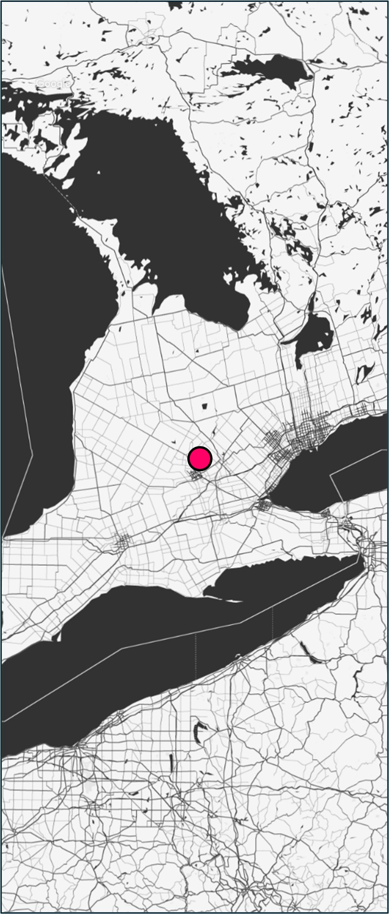
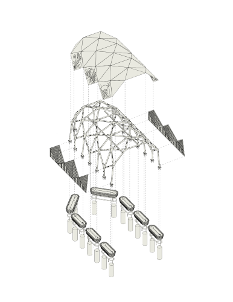
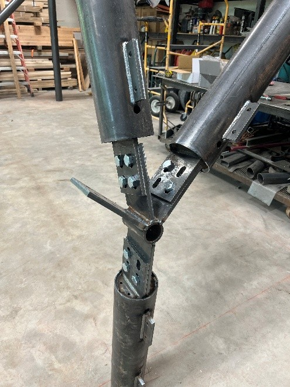
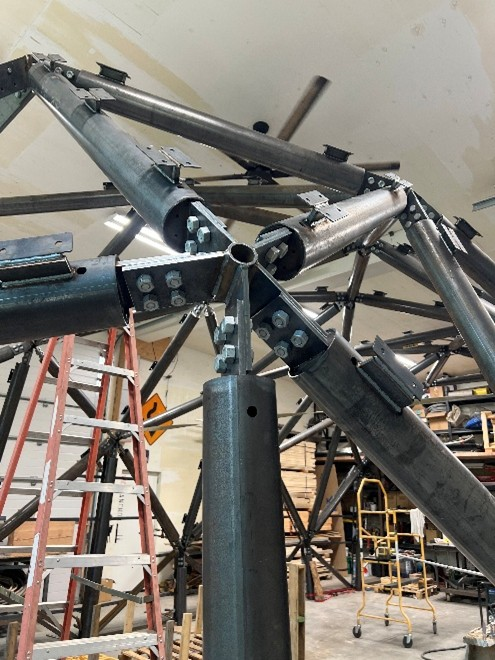
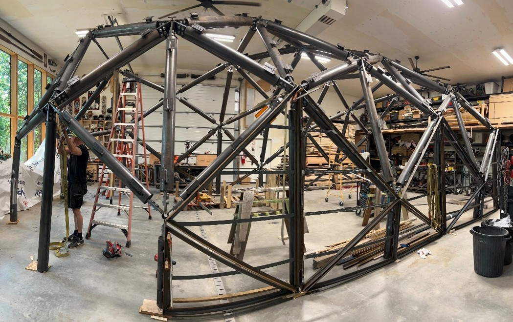
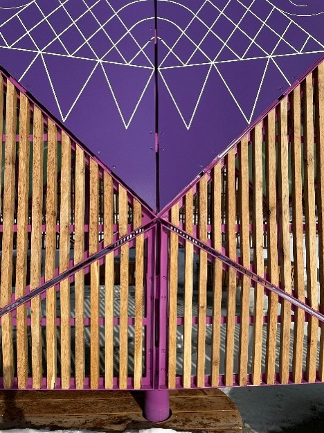
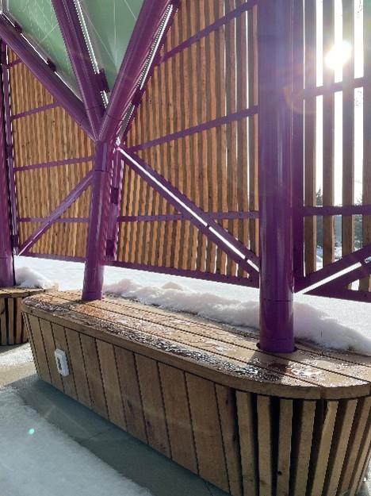
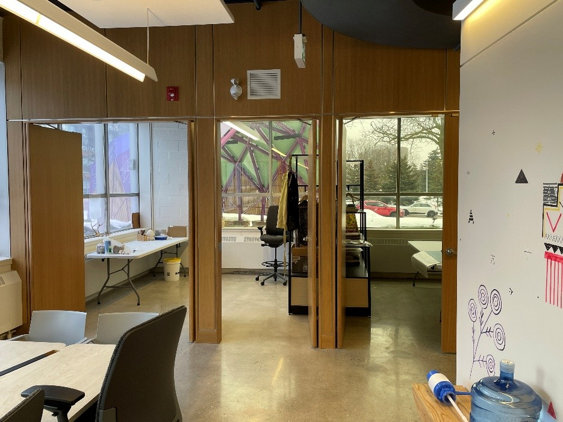

UW | Longhouse Labs Part Two • Pavilion
Waterloo, ON
Conveying the enduring presence of Indigenous people while creating a sheltered outdoor environment for art and experimentation
Originally intended for concurrent completion with the first phase, this second phase was rescheduled to align with funding requirements. The project serves as an outdoor extension of the interior workspace and gallery, providing a dedicated open-air environment for artists-in-residence to practice both traditional and modern crafts. The space is designed for versatile use cases, including the traditional carving and the hanging and drying of animal pelts.
Conceived as a modernized interpretation of a traditional Longhouse, the structure features a painted steel frame clad in sleek aluminum panels. Integrated benches at the base cleverly conceal the concrete piers supporting the frame, while providing functional seating equipped with electrical outlets and recessed lighting.
The final color palette is a direct reference to the 'Dish with One Spoon' wampum, with deep purples reflecting the traditional quahog clam shell beads. Motifs illustrating First Nations concepts of the spiritual realms are overlaid on the primary panels, while white oak boards provide a natural contrast and screened privacy for artists working within the structure.

Exploded Axonometric Drawing
The project was designed to be built and test-fit offsite prior to in-situ assembly. Stuctural members come together at precise angles in various joint combinations.
Foundations are simple cylindrical sonotube piers that support steel baseplates. In construction, these piers were surveyed then 3d scanned for use by the fabricator who was located in Winnipeg. The shop created a mock up the pier locations and on-site assembly took place over the span on approximately one week.

Daytime Rendering
Test view of the project in context. The original design included an extensive garden made up of indigenous plants and medicines.
Evening Rendering
Test view of the project with artificial lighting. Evening and night time use was important to the owner so testing a lighting strategy in a way they could see was a key part of the design process.
Rendering of the Main Aperture
View into the forward facing aperture of the structure. The structure was initially conceived to have an axial connection with the Part One gallery.
Interior Space Rendering
An ample interior volume and breath allows for a broad range of options for use.






Project Info
- Project Name: UW | Longhouse Labs Part Two • Retrofit
- Year Completed: 2026
- Location: Waterloo, ON, Canada
- Firm: Brook McIlroy Incorporated
- Position: Project Architect/Manager